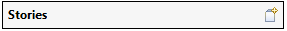
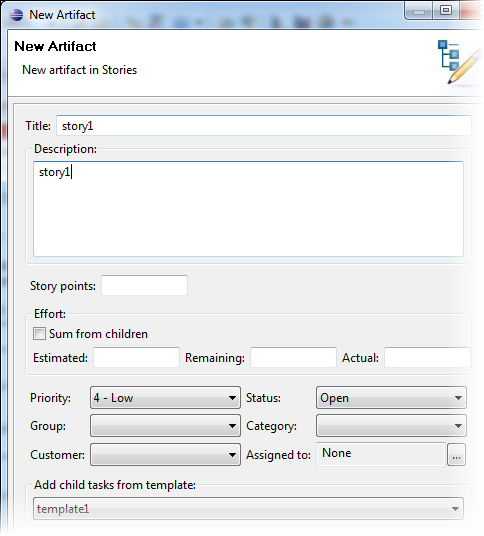
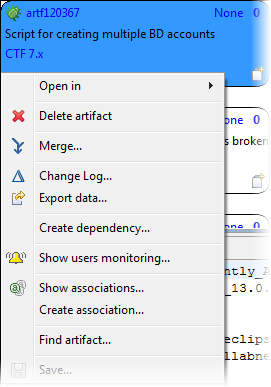
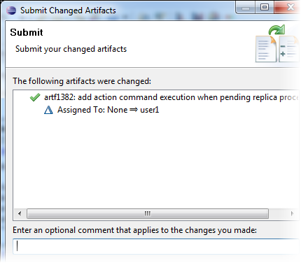

During a sprint, TeamForge project members
can create tasks for new stories, assign and highlight tasks, update effort, and drag and
drop tasks across swimlanes as they progress.
The top area lets you control what you see in the task board.
The left column in the task board displays all your backlog items such as epics
and user stories. These story cards show limited but specific information:
artifact ID, title, description, and configured story size.
-
Story cards are presented in ranked sequence. To change their rank, drag and
drop them as appropriate.
-
To update a story card using the CollabNet Desktop artifact editor, use
either of these options:
- Click the Artifact ID.
- Right-click the story card and select .
-
In addition to the artifact editor, you have a specialized, limited story
editor for the task board cards. The story editor focuses on the core fields for
a story so that they can be edited quickly and easily. To update a card using
the story editor, use one of these options:
- Double-click the story card.
- Right-click the story card and select .
Tip: If you just want to copy and paste artifact
details such as the ID, title, log message and URL, you don't need to open
up the editor. Instead, right-click the card and select the Copy
to clipboard option. Copied details are placed in the
clipboard. This option is available only for artifacts that have been
submitted.
-
To create a new a new backlog item (story card), click
this icon:

In the New Artifact dialog, specify the attributes
for the story.

Tip: If a task template has been set up, select it to create several
tasks at once.
The bulk of the task board displays task cards. Tasks are displayed in
swimlanes that represent their status. As with the story card, the task card
contains information focused on the Agile process: title, description, user assigned
to the task, and configured effort field.
Tip: With version 4.0 of the Desktop, artifact cards
have several context menu options for actions you would perform in the
CollabNet Sites view — for example, you can
create associations and dependencies, export artifact data, and more.

You can set up your
task board's Preferences
to get notified when artifacts are updated on the
TeamForge server by some other client.
Any changes you make to the task board are held locally until you submit them.
When you save your changes, you are provided a summary of all the changes. You can add
an optional comment.
